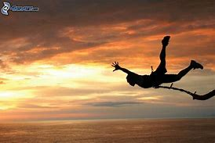
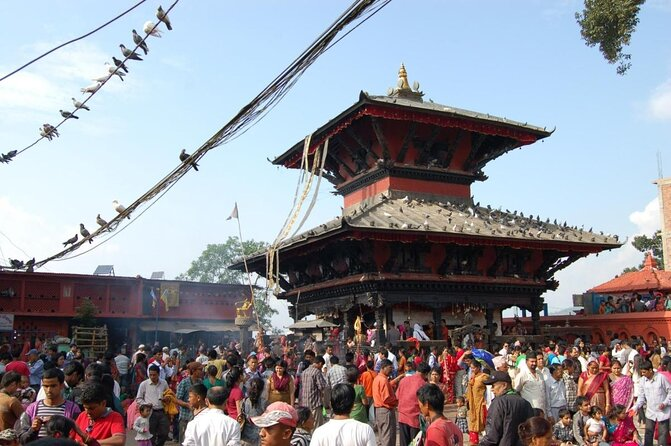
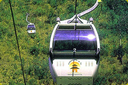

Kathmandu is the capital and biggest city of Nepal, with a populace of around 1 million. The town stands at an elevation of about 1,400 metres (four,600 ft) above sea degree inside the bowl-formed Kathmandu Valley in primary Nepal. The valley was historically referred to as the "Nepal Mandala" and has been the home of the Newar humans, a cosmopolitan city civilization within the Himalayan foothills. The town was the royal capital of the Kingdom of Nepal and hosts palaces, mansions and gardens of the Nepalese aristocracy. It has been home to the headquarters of the South Asian Association for Regional Cooperation (SAARC) given that 1985. Today, it's far the seat of government of the Nepalese republic, mounted in 2008, and is part of the Bagmati Province. Kathmandu is and has been for many years the centre of Nepal's records, artwork, culture, and financial system. It has a multi-ethnic population within a Hindu and Buddhist majority. Religious and cultural festivities shape a first-rate a part of the lives of humans residing in Kathmandu. Tourism is an critical a part of the economic system within the metropolis. In 2013, Kathmandu become ranked 1/3 many of the pinnacle ten upcoming journey destinations in the world by way of TripAdvisor, and ranked first in Asia.The city is taken into consideration the gateway to the Nepalese Himalayas and is domestic to numerous World Heritage Sites: the Durbar Square, Swayambhunath, Boudhanath and Pashupatinath. Kathmandu valley is developing at 4 percent in keeping with year in line with the World Bank in 2010, making it one of the quickest-developing metropolitan areas in South Asia, and the primary place in Nepal to face the exceptional demanding situations of rapid urbanization and modernization at a metropolitan scale. Historic regions of Kathmandu had been seriously damaged with the aid of a 7.8 magnitude earthquake in April 2015. Some of the homes were restored while a few stay within the procedure of reconstruction.
Paragliding

Paragliding is the sporting and serious experience game of flying paragliders: lightweight, free-flying, foot-dispatched lightweight plane airplane with no unbending essential design. The pilot sits in an outfit or lies prostrate in a case like 'speed pack' suspended under a texture wing. Wing shape is kept up with by the suspension lines, the strain of air entering vents toward the front of the wing, and the streamlined powers of the air streaming over the outside. Notwithstanding not utilizing a motor, paraglider flights can last numerous hours and cover a huge number of kilometers, however trips of one to two hours and covering around several kilometers are more the standard. By capable abuse of wellsprings of lift, the pilot might acquire tallness, frequently moving to elevations of a couple thousand meters.
chitwan national park

Chitwan National Park is the primary public park in Nepal. It become installation in 1973 and conceded the situation with a World Heritage Site in 1984. It covers a area of 952.63 km² and is located in the subtropical Inner Terai swamps of south-focal Nepal in the areas of Nawalpur, Parsa, Chitwan and Makwanpur. In elevation it goes from round one hundred m within the circulation valleys to 815 m inside the Churia Hills.Since the finish of the 19th century Chitwan – Heart of the Jungle – was a most loved hunting ground for Nepal's selection elegance in the course of the cool wintry weather seasons. Until the Nineteen Fifties, the excursion from Kathmandu to Nepal's south changed into arduous as the distance ought to be reached through foot and required half of a month. Agreeable camps had been installation for the primitive most important sport trackers and their company, where they remained for a totally long term shooting many tigers, rhinoceroses, panthers and sloth bears.
Bungee jumping
Bungee bouncing , moreover spelled bungy hopping, is an motion that affects an individual hopping from an top notch tallness while related to a huge flexible rope. The take off platform is usually raised on a tall construction like a structure or crane, an extension across a profound gorge, or on a feature geographic component like a precipice. It is also attainable to hop from a sort of aircraft that can drift over the ground, for example, a traveller balloon or helicopter. The rush comes from the loose-falling and the get better. At the point whilst the man or woman leaps, the line extends and the jumper flies upwards once more as the string forces, and continues on swaying here and there until all of the lively electricity is scattered.
Pokhara

Pokhara is a metropolitan city in Nepal, which fills in because the capital of Gandaki Province. It is the united states of a's biggest metropolitan metropolis as a ways as vicinity and second-biggest as a protracted way as populace. The town additionally fills in because the base camp of Kaski District. Pokhara is located two hundred kilometers west of the capital, Kathmandu. The metropolis is at the shore of Phewa Lake, and sits at a rise of approximately 822m. The Annapurna Range, with three out of the ten most elevated tops on earth—Dhaulagiri, Annapurna I and Manaslu—is indoors 15–35 mi of the valley.Pokhara is a metropolitan city in Nepal, which fills in as the capital of Gandaki Province. It is the us's biggest metropolitan metropolis as far as vicinity and second-biggest as a long way as population. The metropolis moreover fills in because the imperative command of Kaski District. Pokhara is found two hundred kilometers (one hundred twenty miles) west of the capital, Kathmandu. The city is at the shore of Phewa Lake, and sits at a upward push of spherical 822m. The Annapurna Range, with 3 out of the ten maximum accelerated tops on the earth—Dhaulagiri, Annapurna I and Manaslu—is interior 15–35 mi (24–fifty six km) of the valley. Pokhara is considered due to the fact the journey organization capital of Nepal, being a base for adventurers project the Annapurna Circuit through the Annapurna Conservation Area district of the Annapurna ranges inside the Himalayas. The city is likewise home to massive numbers of the pinnacle pinnacle Gurkha warriors, troopers nearby to South Asia of Nepalese identification decided on for the British Army, Nepalese Army, Indian Army, Gurkha Contingent Singapore, Gurkha Reserve Unit Brunei, UN peacekeeping powers and in catastrophe areas all at some point of the planet.
Lumbini

Lumbinī is a Buddhist pilgrimage web site within the Rupandehi District of Lumbini Province in Nepal. It is the area wherein, regular with Buddhist way of life, Queen Mahamayadevi gave transport to Siddhartha Gautama at round 563 BCE. Gautama, who finished Enlightenment a while spherical 528 BCE, have end up the Buddha and based totally Buddhism. Lumbini is one among many magnets for pilgrimage that sprang up in locations pivotal to the lifestyles of the Buddha.In the Buddha's time, Lumbini have become placed in east of Kapilavastu and southwest Devadaha of Shakya, an oligarchic republic. According to Buddhist tradition, it was there, that the Buddha turned into born. A pillar located at Rupandehi in 1896 is believed to mark the spot of Ashoka's go to to Lumbini. The website have become now not known as Lumbini before the pillar become determined. The translation of Inscription reads: "When King Devanampriya Priyadarsin were anointed two many years, he got here himself and worshipped (this spot) due to the fact the Buddha Shakyamuni turned into born proper here. (He) every prompted to be made a stone bearing a horse (?) and brought on a stone pillar to be installation, (in order to show) that the Blessed One turned into born right here. (He) made the village of Lummini freed from taxes, and paying (exceptional) an eighth percentage (of the produce)." The park became formerly referred to as Rupandehi, 2 mi (2 mi (three.2 km)) north of Bhagavanpura.The Sutta Nipáta (vs. 683) states that the Buddha turned into born in a village of the Sákyans within the Lumbineyya Janapada. The Buddha stayed in Lumbinívana in some unspecified time in the future of his visit to Devadaha and there preached the Devadaha Sutta.
Swayambhunath Temple

Swayambhu is an ancient non secular complicated atop a hill inside the Kathmandu Valley, west of Kathmandu town. The Tibetan name for the web site manner 'Sublime Trees', for the various varieties of timber determined at the hill. However, Shing.Kun may be a corruption of the neighborhood Nepal Bhasa call for the complicated, Swayambhu, which means 'self-sprung'. For the Buddhist Newars, in whose mythological records and starting place delusion as well as daily spiritual practice Swayambhunath occupies a relevant position, it might be the maximum sacred amongst Buddhist pilgrimage sites. For Tibetans and followers of Tibetan Buddhism, it's far second simplest to Boudha.Swayambhunath Stupa. Find peace and prayers on the little hillock of Swaymbhunath in the northwest of Kathmandu Valley. Visitors for whom the name was a tongue twister have referred to as it "Monkey Temple" from the Nineteen Seventies. Swayambhu, overlooks maximum parts of the valley giving traffic a wide ranging view of the city.Swayambhunath Stupa, Kathmandu, Nepal. A golden spire crowning a conical wooded hill, Swayambhunath Stupa is the maximum historical and enigmatic of all the holy shrines in Kathmandu valley. Its lofty white dome and glittering golden spire are visible for plenty miles and from all sides of the valley.Swayambhunath stupa is the oldest stupa in Kathmandu and one of the oldest religious web sites in Nepal. The historic landmark has been a listed UNESCO World Heritage Site considering 1979. Swayambhunath, or the Monkey temple as it's miles regularly stated, is located at the top of a hill west of Kathmandu, and consists of a primary (huge) stupa surrounded with the aid of Hindu and Buddhist temples and monuments of splendid cultural and historical importance. Swayambhunath is achingly beautiful and truly captivating. Besides, the website also gives an exquisite panoramic view of the capital city. It is truely a should-see for every tourist landing in Kathmandu.
Pashupatinath Temple

The vital temple of Pashupatinath is a building with a bunk roof and a golden spire. It is placed at the Western financial institution of Bagmati and is taken into consideration a masterpiece of Hindu structure. It is a cubic production with 4 important doors, all covered with silver sheets. The -storied roof is crafted from copper and is covered with gold.The Pashupatinath Temple is a well-known and sacred Hindu temple complex that is located at the banks of the Bagmati River, approximately five km north-east of Kathmandu in the japanese a part of Kathmandu Valley, the capital of Nepal. The temple serves due to the fact the seat of Pashupatinath. This temple complex changed into inscribed at the UNESCO World Heritage Sites's listing in 1979. This "massive Hindu temple precinct" is a "sprawling series of temples, ashrams, pics and inscriptions raised over the centuries along the banks of the sacred Bagmati river" and is covered as one of the seven monument agencies in UNESCO's designation of Kathmandu Valley Visit Pashupatinath for an unrivaled combination of spiritual, cultural and non secular memories. Located three km northwest of Kathmandu on the banks of the Bagmati River, the temple place moreover consists of Deupatan, Jaya Bageshori, Gaurighat (Holy Bath), Kutumbahal, Gaushala, Pingalasthan and Sleshmantak wooded location. There are spherical 492 temples, 15 Shivalayas (shrines of Lord Shiva) and 12 Jyotirlinga (phallic shrines) to find out. Pashupatinath Temple is one of the 8 UNESCO Cultural Heritage Sites of the Kathmandu Valley
Manakamana Temple
According to Hindu lore the goddess Bhagwati, an incarnation of Parvati, presents wishes to those who make a sacrifice in her name. Newlyweds praying for children and different favor seekers visit Manakamana Temple, positioned in Nepal’s Gorkha district, to do just that, often in the form of a goat sacrifice made in a pavilion in the back of the temple.The pagoda-fashion temple has a history relationship again to the seventeenth century, but the shape because it stands in its cutting-edge shape changed into constructed in the nineteenth century. While worshipers and site visitors once needed to make an onerous trek up uphill, these days the temple is serviced via the Austrian-designed Manakamana Cable Car now makes the 1.7-mile (2.Eight-kilometer) adventure in less than 10 minutes. From the top, the temple offers incredible views of the Trisuli and Marshyang-di River valleys as well as the peaks of Manaslu, Himalchuli and Annapurna.
How to reach manakamana temple
Transportation to Manakamana : Bus takes three to 4 hours from Kathmandu or Pokhara. Generally micro buses and mini buses run to Kurintar. One can take bus in transit from east/west (Janakpur, Kakadbhitta, Biratnagar, Nepalgunj) to Kathmandu or Kathmandu to east/west.There turned into transportation to Abu Khaireni till the cable car was established. And humans walk uphill for 3 hours to reach Manakamana temple. Now, the cable automobile operates from Kurintar. Cable car takes 10-12 minutes to attain the pinnacle.The cable vehicle typically operates at some stage in the day time (nine a.M. To five p.M). It stops for a lunch ruin from 12.00 to thirteen.30. In festive events and on Saturdays and vacations it begins operations an hour before time table time.